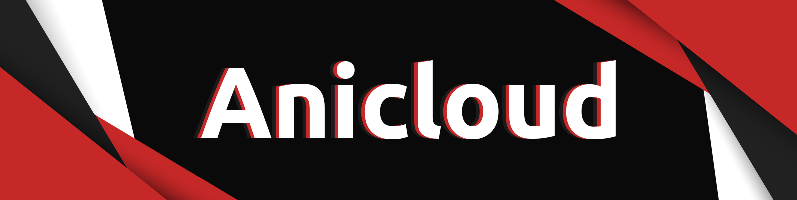

1.1 Любой, играющий на проекте, автоматически соглашается с этим сводом правил и обязуется выполнять их.
1.2 Администраторы игрового проекта имеет полное право заблокировать Ваш аккаунт за нарушение того или иного пункта правил.
1.3 Администраторы игрового проекта имеет полное право аннулировать/заблокировать Ваш аккаунт без объяснения причин.
1.4 Все деньги, переведенные Вами на счет аккаунта, считаются добровольным пожертвованием на развитие проекта.
1.5 Администрация не несет ответственности за неправильно переведенные средства.
1.6 Администрация не обязана возвращать Вам то, что Вы утратили в следствие какой-либо технической/игровой ситуации.
1.7 Данный свод правил может быть изменен в любой момент, и администрация оставляет на себе право не оповещать игроков об изменениях.
1.8 Незнание правил не освобождает вас от ответственности. Взлом вашего аккаунта не является оправданием, если вас обвиняют в нарушении правил.
1.9 Вернуть пожертвованные средства вы не сможете ни при каких условиях. Привилегии могут изменяться без предварительного уведомления владельцев.
1.10 На обжалование Бана дается 3 дня (Со дня получения Бана).
1.11 Админы не понимают в шутки, рофлы, юмор и тд.
2.1 Строительство нецензурных слов, а также фигур, несущих порнографический характер.
2.2 Выдавать себя за члена администрации/модератора проекта, не являясь ее представителем.
* Говорить что админка / модерка на втором аккаунте, вызывать на проверку и подобное.
2.3 Устанавливать объекты, нагружающие работу серверного оборудования.
2.4 Использование / Хранение стороннего ПО (чит-клиенты, чит-модификации, xray текстурпак, миникарта с игроками, damage indicator, любой вид кликеров, макросы на мышку, laby mod, freecam, Cheat Engine, Chunk Animator, potioncore) / уязвимостей сервера (баги, дюп).
* Модератор может потребовать пройти проверку. (Discord, Teamviewer, AnyDesk). В случае отказа Бан на 30 дней.
* Информация о моде MacroKeyBind. Мод разрешен, но запрещено использовать читерские скрипты (Например, на поиск ресурсов, кликеры).
* Не советуем что-то изменять или удалять в папке minecraft когда вас вызвали на проверку, это может расцениваться как попытка удалить что-то запрещенное.
* Если вы сознались в нарушении правила до начала проверки, то ваш срок бана будет сокращен на 7 дней.
2.5 Любая передача/продажа аккаунта.
2.6 Любая торговля за не внутриигровые деньги, просьбы пополнить счет, кошелек и тд.
2.7 Создавать помехи для работы модераторов/администрации.
2.8 Нарушение развлекательных мероприятий на проекте/создание отвлекающих факторов для организаторов.
2.9 Подстрекательство игроков на нарушение правил.
2.10 Введение игроков в заблуждение.
2.11 Гриферство, а также поиск его способов. (Заманивание в ловушки, установка точки дома в чужом регионе входят сюда)
* Все добавленные в приват игроки являются равноправными владельцами региона. Добавляя в свой приват игрока, вы разрешаете ему делать в регионе все что угодно. В случае гриферства совладельцем региона вещи возвращены не будут.
2.12 Обходить Бан / мут, играя на другом аккаунте, когда один из аккаунтов в Бане.
* Бан по IP. Срок наказания удваивается. Бан по 2.13 сюда не входит.
2.13 Иметь оскорбительный / нецензурный / схожий с администрацией ник. (Rigagit = _Rigagit_ )
2.14 Взлом чужих аккаунтов, а так же привязка чужих аккаунтов.
3.1 Оскорбление игроков любым способом.
3.2 Флуд/повторение сообщений, символов. Интервал между однотипными сообщениями должен быть не менее ~30 секунд. Реклама какого-либо варпа / магазина и тому подобное раз в 3 минуты. Флуд символами
cчитается от 5 символов и выше.
3.3 Заведомо ложные показания о предвидящихся технических событиях на проекте.
3.4 Использование ВЕРХНЕГО РЕГИСТРА (CAPS) в более 50% своего сообщения.
3.5 Реклама любого ПО, игровых ресурсов, каналов, серверов, магазинов (упоминание может быть рассчитано рекламой)
3.6 Мат в любом виде. (Учитывая завуалированные выражения, сленг и контекст (например ля, пидец, ауеть, ска и тд). Никакие оправдания "Ля это нота" и тд. вам не помогут.)
3.7 Оскорбление проекта и администрации.
* Распространяется на соц. сети.
3.8 Афиширование багов, дюпов.
3.9 Оскорбление родных.
3.10 Организация флуда.
3.11 Сообщения сексуального характера.
3.12 Оскорбление чувств верующих.
3.13 Пропаганда или агитация, возбуждающие социальную, расовую, национальную или религиозную ненависть и вражду.
3.14 Систематическое нарушение правил, обычно влекущих за собой мут. Бан на 7 дней.
4.1 Тим в соло режимах, создание помех во время игры.
4.2 Запуск ботов / твинов на мини-игру.
5.1 При выдаче ban/mute/kick/warn модератор обязан иметь скриншот/видеозапись нарушения.
5.2 Запрещено использование игровых полномочий во вред серверу.
5.3 Запрещено создавать помехи для игры при телепортировании к другому игроку.
5.4 Адекватно вести себя, как в чате, так и в игре.
5.5 Знать свои прямые обязанности и выполнять их.
5.6 Соблюдать устав правил.
5.7 Запрещено преждевременное снятие наказания.
6.1 Любые спойлеры в группе, конфе или на сервере автоматически навлекают на вас гнев богов.
* Возможно лишение донатов, удаление острова, вечный бан везде где можно и нельзя и другие не очень приятные вещи. Не спойлерите.
* Работает 2 недели с выхода премьеры в России.